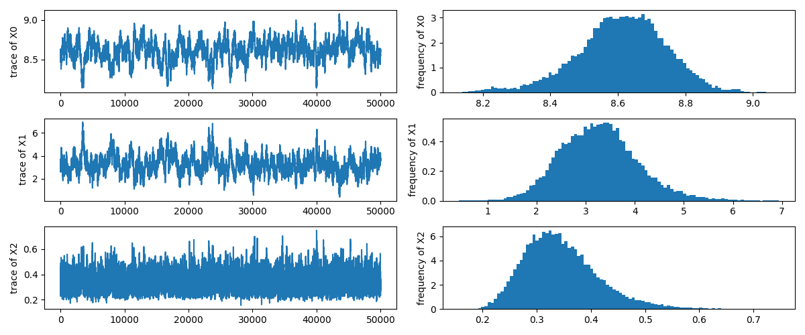
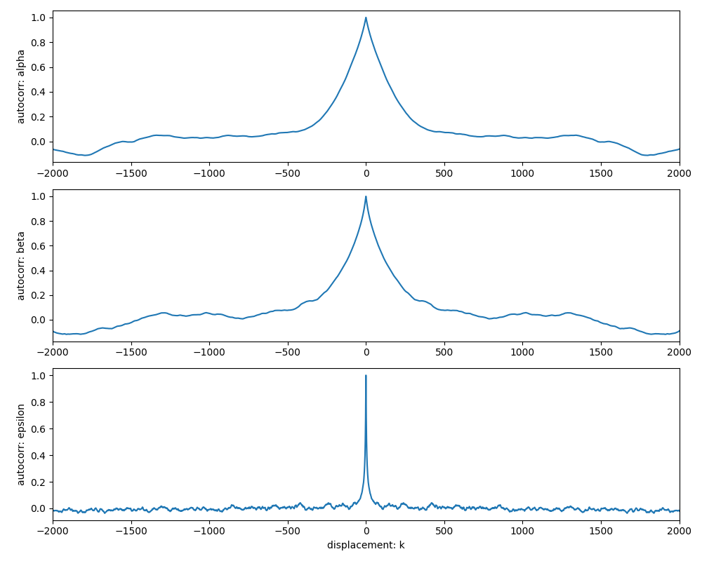
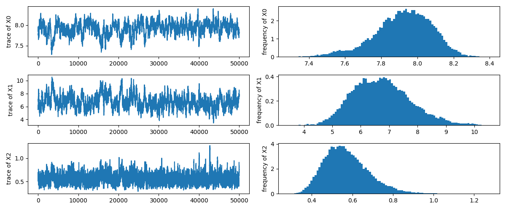
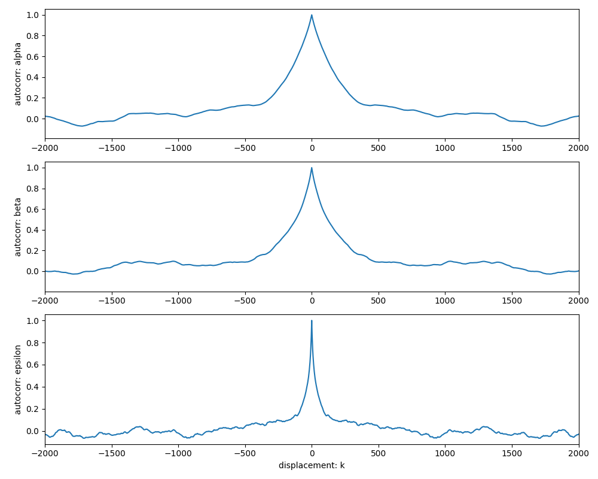

演習問題: 打ち切り回帰
ここでは超大質量ブラックホール (supermassive blackhole) と, 銀河バルジ (bulge) の速度分散の関係に少し手を加えたデータを使用します. 天文学に限らず, 実験によって得られるデータは装置性能の限界や実験時間の限界などによって一部しかデータが取得できないことがよくあります. ここではそのようなデータに対して適用することのできる打ち切り回帰モデル (censored regression) を
データ
同じく Harris et al. (2013) のカタログを利用します. ただし今回はブラックホール質量が \(10^{8.5}M_\odot\) 未満の天体は検出限界以下だったと仮定して値を 0 に改変しています.
演習用に整形したデータを以下からダウンロードしてください.
| ファイル名 | 形式 |
|---|---|
| exercise_censored_regression.csv | csv |
データテーブルには以下のカラムが含まれています.
| カラム名 | 説明 |
|---|---|
| galaxy | 銀河名/カタログ ID1 |
| ra | 赤経座標 (J2000)1 |
| dec | 赤緯座標 (J2000)1 |
| dist | 距離 (Mpc)1 |
| dist_err | 距離の不定性 (Mpc)1 |
| logsig | 銀河バルジの速度分散 (対数) \(\log_{10}\sigma_e\) (km/s) |
| logsig_err | 銀河バルジの速度分散の不定性 \(\varepsilon_\sigma\) |
| logM_B | 超大質量ブラックホールの質量 (対数) \(\log_{10}{M_B}\) (\({M_\odot}\)) |
| logM_B_err | 超大質量ブラックホールの質量の不定性 \(\varepsilon_M\) |
まずはデータの関係を図示します.
import numpy as np
import pandas as pd
import matplotlib.pyplot as plt
table = pd.read_csv('./exercise_linear_regression.csv')
print(table)
fig = plt.figure()
ax = fig.add_subplot()
ax.errorbar(
x = table.logsig, y = table.logM_B,
xerr = table.logsig_err, yerr = table.logM_B_err, fmt='.')
ax.set_xlabel('$\log_{10}\sigma_e$ (km/s)')
ax.set_ylabel('$\log_{10}M_B$ ($M_\odot$)')
fig.tight_layout()
plt.show()
計算結果
galaxy ra dec dist dist_err logsig logsig_err logM_B logM_B_err
0 MilkyWay 0.000000 0.000000 0.00 0.00 2.021 0.076 0.00 0.000
1 NGC221 0.711607 40.865165 0.76 0.07 1.875 0.017 0.00 0.000
2 NGC224 0.712316 41.268883 0.77 0.02 2.204 0.021 0.00 0.000
3 NGC253 0.792531 -25.288442 3.54 0.20 2.011 0.073 0.00 0.000
4 NGC821 2.139199 10.995008 23.38 1.24 2.320 0.020 0.00 0.000
5 NGC1023 2.673329 39.063253 11.43 1.00 2.320 0.020 0.00 0.000
6 NGC1316 3.378256 -37.208211 21.09 0.30 2.357 0.006 0.00 0.000
7 NGC1332 3.438111 -21.335276 22.91 0.20 2.506 0.018 9.17 0.060
8 NGC1399 3.641408 -35.450626 20.68 0.50 2.528 0.020 8.69 0.065
9 NGC2778 9.206775 35.027417 22.91 3.39 2.243 0.019 0.00 0.000
10 NGC3031 9.925869 69.065438 3.55 0.07 2.155 0.021 0.00 0.000
11 NGC3115 10.087214 -7.718556 10.00 0.50 2.362 0.020 8.96 0.170
12 NGC3377 10.795104 13.985641 11.04 0.25 2.161 0.020 0.00 0.000
13 NGC3379 10.797108 12.581611 10.20 0.50 2.314 0.021 0.00 0.000
14 NGC3384 10.804699 12.629401 10.80 0.77 2.155 0.021 0.00 0.000
15 NGC3414 10.854492 27.974833 25.23 4.14 2.374 0.014 0.00 0.000
16 NGC3585 11.221418 -26.754864 21.20 1.73 2.328 0.020 8.51 0.140
17 NGC3607 11.281816 18.051899 20.00 2.00 2.360 0.020 0.00 0.000
18 NGC3608 11.283036 18.148538 23.00 2.00 2.260 0.021 8.67 0.095
19 NGC3842 11.733936 19.949696 94.90 6.70 2.498 0.011 9.99 0.125
20 NGC4261 12.323060 5.825041 31.62 2.89 2.498 0.020 8.71 0.085
21 NGC4291 12.338247 75.370944 26.18 4.16 2.384 0.021 8.98 0.140
22 NGC4350 12.399394 16.693471 15.50 0.78 2.256 0.017 8.74 0.100
23 NGC4374 12.417685 12.887071 18.51 0.61 2.471 0.020 8.96 0.045
24 NGC4459 12.483339 13.978556 16.01 0.55 2.223 0.020 0.00 0.000
25 NGC4472 12.496331 8.000389 17.03 0.21 2.468 0.004 9.26 0.150
26 NGC4473 12.496907 13.429397 15.25 0.51 2.279 0.020 0.00 0.000
27 NGC4486 12.513724 12.391217 17.00 0.30 2.574 0.020 9.77 0.030
28 NGC4486A 12.516033 12.270333 18.36 0.64 2.045 0.019 0.00 0.000
29 NGC4552 12.594402 12.556115 15.89 0.55 2.402 0.006 8.68 0.045
30 NGC4564 12.607493 11.439400 15.87 0.53 2.210 0.021 0.00 0.000
31 NGC4594 12.666513 -11.623010 9.77 0.84 2.380 0.021 8.72 0.435
32 NGC4621 12.700637 11.647308 14.85 0.50 2.352 0.006 8.60 0.065
33 NGC4649 12.727789 11.552672 17.09 0.61 2.585 0.021 9.63 0.100
34 NGC4697 12.809995 -5.800602 12.01 0.78 2.248 0.019 0.00 0.000
35 NGC4889 13.002237 27.977031 96.60 6.80 2.603 0.006 10.32 0.435
36 NGC5128 13.424479 -43.018118 3.80 0.07 2.176 0.020 0.00 0.000
37 IC4296 13.610847 -33.965822 49.68 2.73 2.508 0.021 9.13 0.065
38 NGC5813 15.019805 1.702009 32.21 2.78 2.374 0.006 8.84 0.070
39 NGC5845 15.100215 1.633972 25.94 2.63 2.369 0.020 8.69 0.140
40 NGC5846 15.108124 1.606291 24.89 2.40 2.379 0.008 9.04 0.080
41 NGC6086 16.209883 29.484478 137.30 9.60 2.524 0.012 9.56 0.160
42 NGC7332 22.623476 23.798260 23.01 2.22 2.097 0.011 0.00 0.000
43 IC1459 22.952945 -36.462176 29.24 4.02 2.486 0.011 9.45 0.195
44 NGC7457 23.016647 30.144889 13.24 1.34 1.826 0.019 0.00 0.000
45 NGC7768 23.849610 27.147336 112.10 7.90 2.495 0.021 9.11 0.150
打ち切り回帰モデル
線形回帰の場合と同様に Harris et al. (2013) を参考にして以下の式を fitting の関数として採用します. ただし \(\sigma_0\) は 200 km/s とします.
観測値が有効な場合には正規分布を仮定した尤度関数を使用します.12
観測値が無効な場合にも正規分布を仮定した確率を使用します. ただし, 検出限界 (今回は \(10^{8.5}M_\odot\)) 以下である確率を使います.
ここで \(C(m,\mu,\sigma)\) は正規分布の累積確率分布関数, \(M_\mathrm{lim}\) は検出限界質量です.
全データについて合計した尤度関数は以下のようになります.
\(\tau\) についての事前分布として Gamma 分布を仮定しました.
打ち切りデータを排除する
打ち切りデータを含めないで解析した場合にどのような結果になるかを計算してください.
Example
import numpy as np
import pandas as pd
import scipy.stats as stats
import matplotlib.pyplot as plt
from mhmcmc import MHMCMCSampler, GaussianStep
table = pd.read_csv('./exercise_censored_regression.csv')
table = table.loc[table.logM_B>0,:]
def log_gamma(x,k=1e-3,t=1e3):
return (k-1)*np.log(x)-x/t if x>0 else -1e10
def log_likelihood(x):
if x[2] < 0: return -1e10
delta = table.logM_B - (x[0] + x[1]*(table.logsig-np.log10(200)))
sqsig = table.logM_B_err**2 + x[1]**2*table.logsig_err**2 + x[2]
logpdf = -(delta**2/sqsig/2+np.log(sqsig)/2)
return np.sum(logpdf)+log_gamma(1/x[2])
step = GaussianStep(np.array([0.02, 0.15, 0.05]))
model = MHMCMCSampler(log_likelihood, step)
x0 = np.array([8.0, 5.0, 0.5])
model.initialize(x0)
sample = model.generate(51000)
sample = sample[1000:]
sample[:,2] = np.sqrt(sample[:,2])
x = np.linspace(-0.5,0.5,50)
a,b,e = sample.mean(axis=0)
fig = plt.figure(figsize=(8,6))
ax = fig.add_subplot()
ax.fill_between(x, a+b*x-3*e, a+b*x+3*e, color='gray', alpha=0.05)
ax.fill_between(x, a+b*x-e, a+b*x+e, color='gray', alpha=0.10)
for _a,_b,_e in sample[::1000,:]:
ax.plot(x, _a+_b*x, color='orange', alpha=0.05)
ax.errorbar(
x = table.logsig-np.log10(200), y = table.logM_B,
xerr = table.logsig_err, yerr = table.logM_B_err, fmt='.')
ax.plot(x, a+b*x)
ax.set_xlabel('$\log_{10}\sigma_e$ (km/s)')
ax.set_ylabel('$\log_{10}M_B$ ($M_\odot$)')
fig.tight_layout()
plt.show()
print(f'MCMC inference: alpha={a:.3f}, beta={b:.3f}, epsilon={e:.3f}')
計算結果
MCMC inference: alpha=8.612, beta=3.274, epsilon=0.345
上記のサンプルで出力したトレースと自己相関関数を示します.  
打ち切りデータを含める
打ち切りデータを含めて解析した場合にどのような結果になるか計算してください.
Example
import numpy as np
import pandas as pd
import scipy.stats as stats
import matplotlib.pyplot as plt
from mhmcmc import MHMCMCSampler, GaussianStep
table = pd.read_csv('../../data/mcmc/exercise_censored_regression.csv')
def log_gamma(x,k,t):
return (k-1)*np.log(x)-x/t if x>0 else -1e10
def log_likelihood(x):
valid = (table.logM_B > 0.0)
beta = x[0] + x[1]*(table.logsig-np.log10(200))
delta = table.logM_B - beta
sqsig = table.logM_B_err**2 + x[1]**2*table.logsig_err**2 + x[2]
if (sqsig<0).any(): return -1e10
logpdf = -(delta**2/sqsig/2+np.log(sqsig)/2)
logcdf = stats.norm.logcdf(8.0, beta, np.sqrt(sqsig))
return np.sum(valid*logpdf+(1-valid)*logcdf)+log_gamma(1/x[2],1e-3,1e3)
step = GaussianStep(np.array([0.02, 0.15, 0.05]))
model = MHMCMCSampler(log_likelihood, step)
x0 = np.array([8.0, 5.0, 0.5])
model.initialize(x0)
sample = model.generate(51000)
sample = sample[1000:]
sample[:,2] = np.sqrt(sample[:,2])
x = np.linspace(-0.5,0.5,50)
a,b,e = sample.mean(axis=0)
fig = plt.figure(figsize=(8,6))
ax = fig.add_subplot()
ax.fill_between(x, a+b*x-3*e, a+b*x+3*e, color='gray', alpha=0.05)
ax.fill_between(x, a+b*x-e, a+b*x+e, color='gray', alpha=0.10)
for _a,_b,_e in sample[::1000,:]:
ax.plot(x, _a+_b*x, color='orange', alpha=0.05)
ax.errorbar(
x = table.logsig-np.log10(200), y = table.logM_B,
xerr = table.logsig_err, yerr = table.logM_B_err, fmt='.')
ax.plot(x, a+b*x)
ax.set_xlabel('$\log_{10}\sigma_e$ (km/s)')
ax.set_ylabel('$\log_{10}M_B$ ($M_\odot$)')
fig.tight_layout()
plt.show()
print(f'MCMC inference: alpha={a:.3f}, beta={b:.3f}, epsilon={e:.3f}')
計算結果
MCMC inference: alpha=7.920, beta=6.743, epsilon=0.573
上記のサンプルで出力したトレースと自己相関関数を示します.  